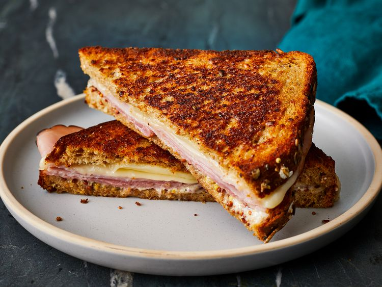

Word's Best Lasagna

Description
There's nothing like a grilled ham and cheese sandwhich coupled with a
warm bowl of tomato soup, especially this awesome hot ham and cheese sandwhich.
Get ready for some childhood nostalgia!
Ingredients
- 2 slices of whole grain bread
- 2 tsp butter
- 2 slices cheese (your preference, but I choose provolone)
- 2 thin slices deli ham
- 1 tsp mayonaise
- 1 tsp whole grain mustard
Instructions
- preheat a skillet on the stove at medium-high heat
- spread one side of each slice of bread with butter
- place one slice butter-side down in the skillet.
Now add the cheese and ham
- spread mayonaise and mustard onto the unbuttered side
of the second piece of bread and place the bread butter-side up onto the sandwhich
- cook in the skillet on each side for about 3 minutes, or until golden brown and cheese is melted
- Let the cheesy good times roll!
For the full (original) recipe, click here